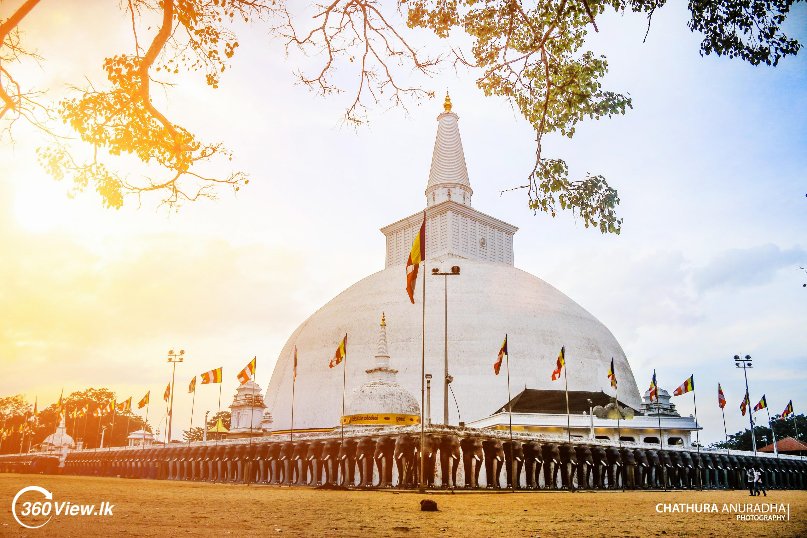
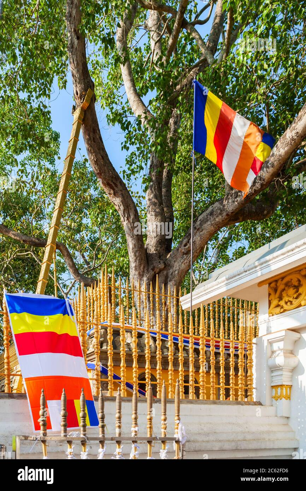
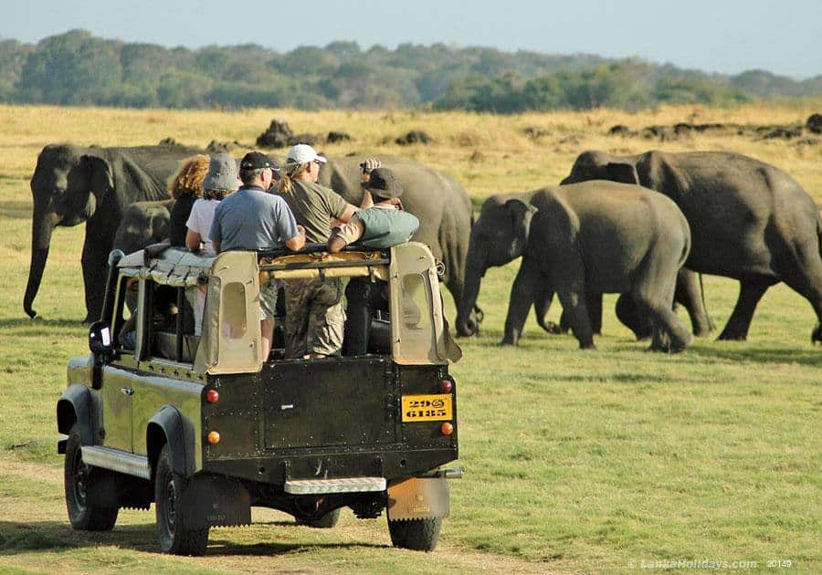
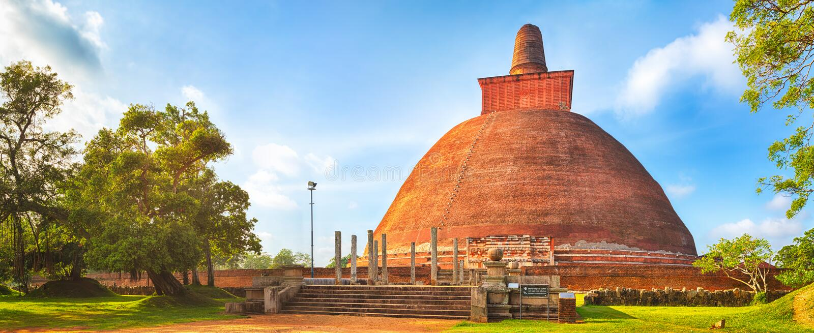

Welcome To The
" NORTH - CENTRAL..."
North Central Province (Sinhala: උතුරු මැද පළාත) is one of the nine provinces of Sri Lanka, the first level administrative division of the country. The provinces have existed since the 19th century but did not have any legal status until 1987 when the 13th Amendment to the Constitution of Sri Lanka established provincial councils.The province is the largest by size, and second least populated in the country.The province consists of the districts of Anuradhapura and Polonnaruwa, both of which were important ancient Sri Lankan kingdoms. The climate is semi-arid, and the forests are dry evergreen forests.
Places to visit in North-central




